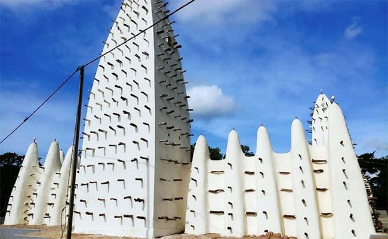
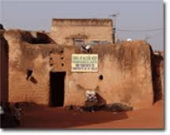
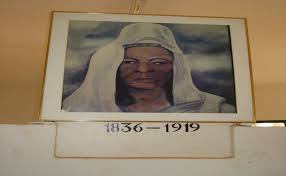
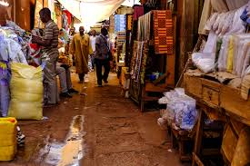

La ville de Bobo-Dioulasso
Accueil
Patrimoine
Reservation d'hotel
Galerie
La Vieille mosquee de bobo

Le Vieux quartier de Dioulasso_ba

Mausolee de Guimbi Ouattara

Grand marche de Bobo-Dioulasso

Musee Rene fourmier
La Cathedrale Notre Dame de bobo
Village de koro
Musee Sogossira Sanon
Le Village artisanal de bobo
La gare feroviere